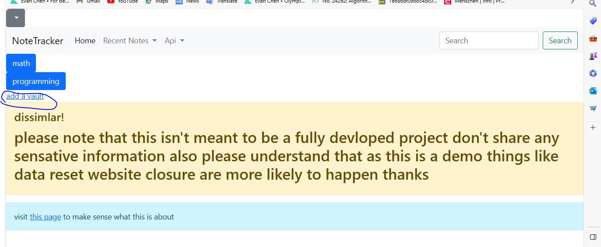
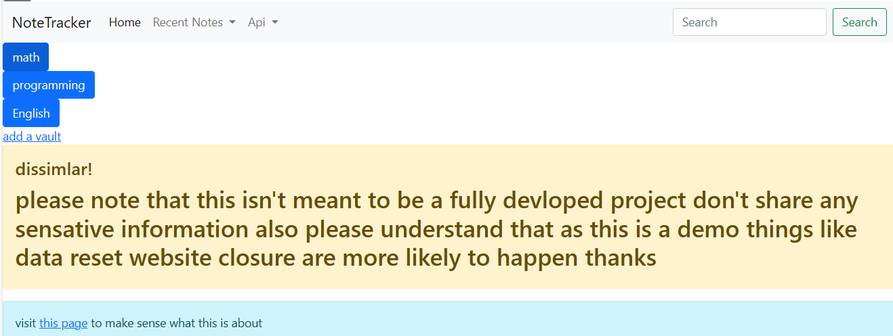
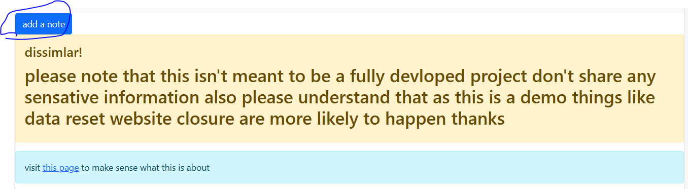
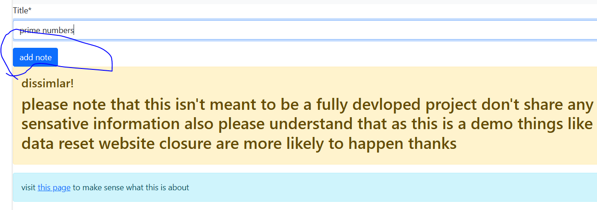
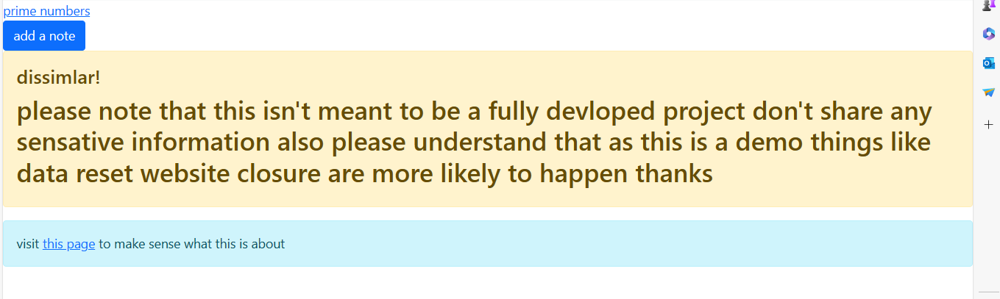
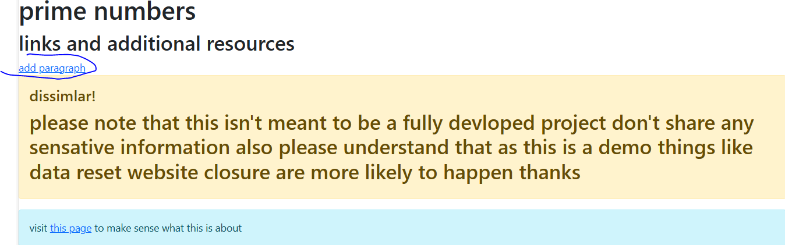
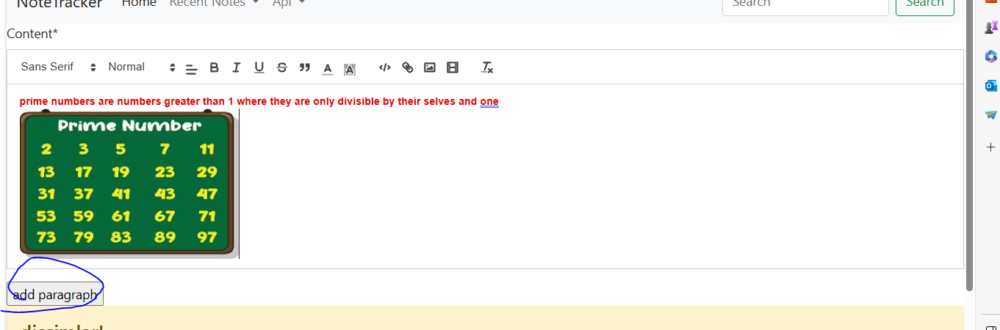
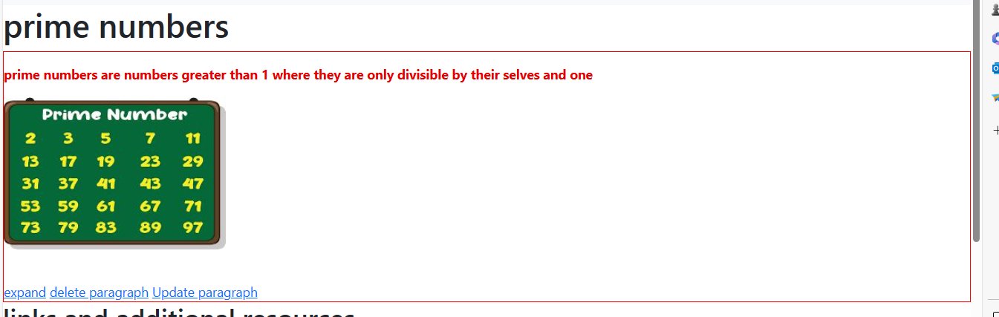

vaults here are a way to organize the notes which share common things together
lets say u study three subjects math, programming and English and want to add notes on those subjects
a good way is to create three vaults math, programming and English:


then we can add notes lets say you are learning about prime numbers all you need to do is to click on
the math vault then add a note call it primes:



now open the Note called "primes"
click on add paragraph
add the info you want



now you have a section/pargraph inside your note you can delete, update or show more information about the
paragraph like the created date.
recently visited Notes